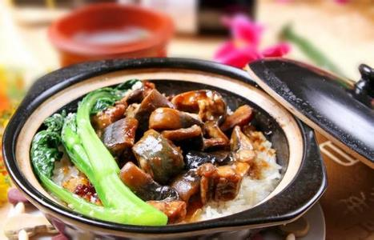

做一碗喷香的煲仔饭，锅巴是它的灵魂
2014-01-25 09:38 来源：生活网

首先，把米泡好，然后在砂锅里抹上一层油，不要抹多，可以用葵花籽油，色拉油什么的。之后就放米放水。水一定不能多放。因为米已经吸饱水了。
然后盖上锅盖，大火，水开了之后换中火。等锅里的水变成类似于稀饭一样粘稠，没剩多少（请尽量少开几次锅盖，这个也需要经验）的时候，放一勺油，这一勺油的用处是让米饭更香更亮更好吃，最重要的一点是这样能出锅巴！
最后把配菜啥的放进去，淋上酱汁。然后火稍微调小一点，盖上盖子再焖一会，等菜快熟了的时候关火，不开盖，焖5分钟左右，就搞定了。